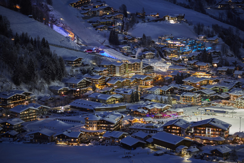

Enduro Homepage
Var börjar man om man vill cykla MTB i Stockholm? Här är fem varianter som är lätta att hitta och följa och därför ganska lämpliga turer för de som just trätt in i stigcyklingens förlovade land. Det är dock inte bara fem helt släta slingor utan lite tekniskt tuggmotstånd, sköna utmaningar finns längs stigarna.
I Österåker, strax utanför Åkersberga ligger den 3,7 km långa Hackstabanan som färdigställdes förra sommaren. Banan som byggts på uppdrag av Åkersberga kommun är väl uppmärkt och även om den är anpassad för nybörjare så bjuder den på underhållning för cyklister på de flesta nivåer. Spåret vindlar sig fram i friluftsområdet och här har man försökt utnyttja terrängen till max. Underlaget har jämnats ut med grus där man ansett att det behövts så det är ingen risk att skaka sönder på en hardtail. För mer erfarna cyklisterna gäller det att hålla farten uppe genom alla svängar och hitta de drops och hopp som ligger intill spåret.

audio element.